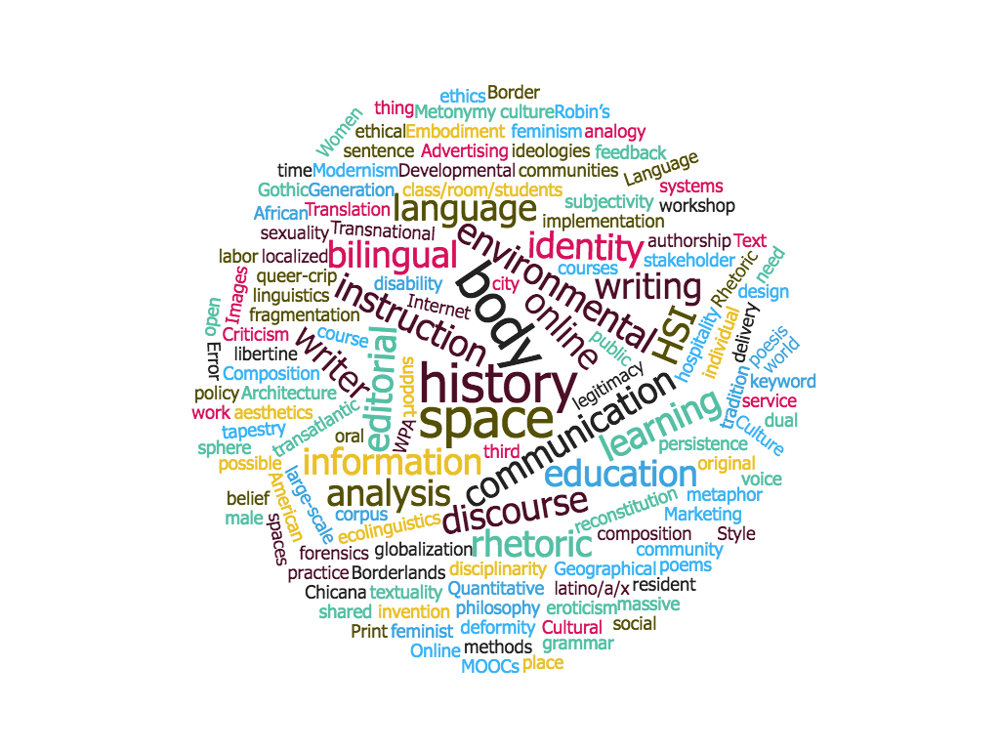
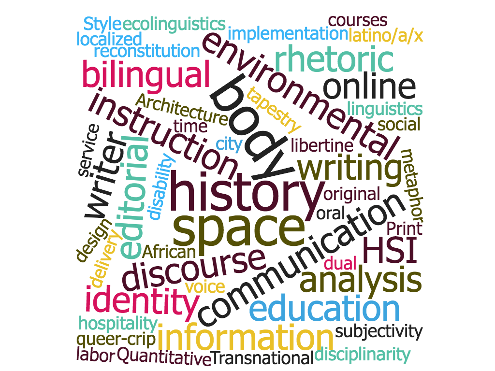

Faculty self-identified strengths
This word cloud was generated with Voyant Tools for work with MA Recruitment ad hoc, Fall 2017.
I thought a distant reading might be useful as part of our process of crystallizing our common identity as a department. I took the data collected from the self-identified strengths document and dropped it in plaintext. To focus on what's represented in our comments themselves, I took out much of the starter text from Kelly's questionnaire ("When working one-on-one with students, I'm really good at..."). This cut approximately 600 words from the corpus.
The result is quick and dirty, but, I hope, useful.
Interact with the corpus at Voyant Tools
Cleaned up list of self-identified strengths; text file
Faculty identity from publications
First I wanted to listen at the level of keywords; I used identified keywords for those publications tagged with them or created keywords for pubs after a hasty scan. These are based only on the most-recent (?) single texts posted to the Blackboard folder. (If really interested in the list of keywords, .
Reveal the full list
- Online education, MOOCs (massive online open courses), online writing instruction, large-scale instruction, course design, delivery
- Cultural work public sphere editorial forensics identity transatlantic editorial invention
- Criticism feedback workshop voice
- Transnational spaces identity latino/a/x globalization culture
- Composition class/room/students hospitality disciplinarity ethical practice
- Rhetoric belief history of rhetoric philosophy analogy
- Generation 1.5 L2 writing Error analysis Text analysis Quantitative methods; bilingual writer, resident L2 writer
- libertine, sexuality, disability, queer-crip, deformity
- Language ideologies; dual language; bilingual education; language policy; implementation, stakeholder
- Borderlands service learning HSI place legitimacy
- Border body localized Chicana third space feminism, male subjectivity in feminist discourse
- Developmental learning communities composition ethics persistence HSI WPA support
- Architecture; space; African American; textuality; eroticism, city space
- Geographical information systems, corpus linguistics, ecolinguistics, environmental communication, environmental discourse
- Metonymy metaphor oral tradition rhetoric community shared information Internet communication
- Style sentence history grammar aesthetics
- Translation tapestry original labor authorship history
- Gothic individual body social body fragmentation reconstitution
- Modernism, Women, Images, Marketing, Advertising, Print Culture, Embodiment
To tease out the overlaps, I wrote the following mashup text, identifying common cross-sites in the list as I prepared it. The mashup undoubtedly leaves something cool out; it's just the remains of my noticing.
TRANS border cultural work in the public sphere; crossing borders and boundaries with bodies as sites of geo-eco-social-linguisti-cultural crossings; delivery and instruction and crossing big with small institutions with disciplines and bodies (people) in the middle; generational-linguistic bi-trans-queer-identities; place and legitimacy of identities and place in borderlands; words words words.
Word cloud 1: Keywords from grad faculty
In this and the following word cloud, be careful with repetitions, which may stem from similar keywords in the same text; still, there are some clear commonalities that many of us might agree typify our work.

Word cloud 2: Keywords from grad faculty, bottom 90 words cut out
